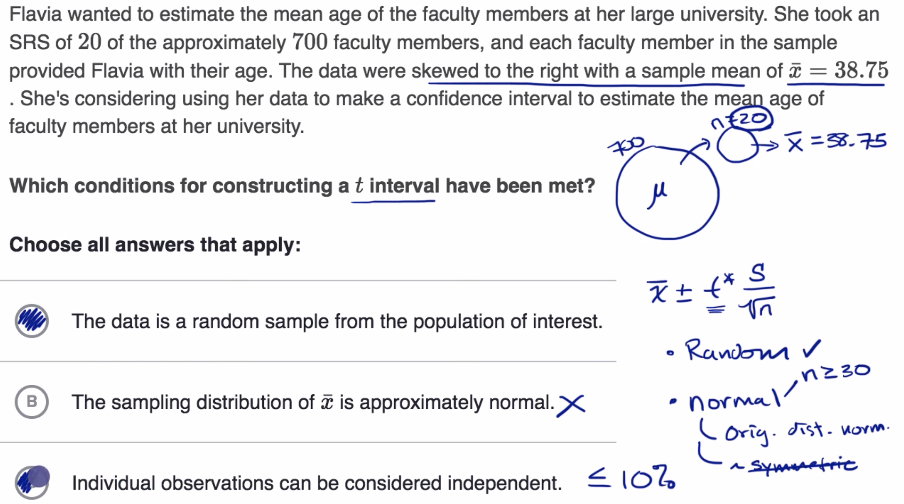

17 Conditions for valid t intervals¶
import numpy as np
import pandas as pd
from pandas import Series, DataFrame
import matplotlib.pyplot as plt
import seaborn as sns
from scipy import stats, special
Reference: Conditions for inference on a mean
